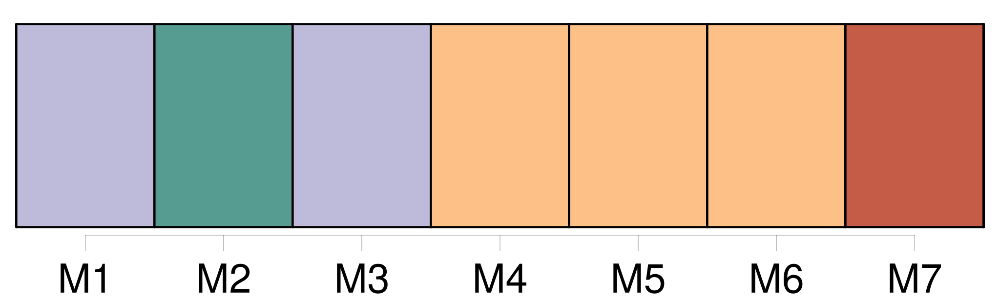

Longueur nb maillons : 18 mentions |
 |
[ article ]
sNé le 29 novembre 1928 à Creuë, [Pierre Courtier] est décédé suite à une longue et douloureuse maladie le 30 décembre. Marié le 26 avril 1958 avec Jeanne Lardenois, [il] était le père de deux filles, Chantal, épouse Mettavant, et demeurant à Chaillon et Claudine, habitant Creuë.
[Il] avait trois petits enfants : Virginie, Christophe et Nadine.
Ayant exercé la profession d'agriculteur, [il] était en retraite et savait occuper [son] temps libre entre le jardinage, les voyages qu' [il] appréciait beaucoup et le club « Rencontres » de Creuë.
[Il] aimait le contact avec ses voisins car [il] était convivial et estimé.
[Il] avait fait [son] service militaire en Allemagne et [appartenait] à ce titre à la section des Anciens Combattants.
[Il] avait également participé à la vie communale ayant été conseiller municipal pendant deux mandats.
Avec [lui] , c'est une ancienne figure qui disparaît trop tôt et nul doute que [son] souvenir restera longtemps dans les mémoires du village.
[Ses] obsèques auront lieu aujourd'hui, à 15 h, en l'église de Creuë.
A [sa] famille, l'Est Républicain présente ses condoléances. |
|
Il est possible de télécharger la ressource sur la page Ortolang |
Si vous avez des questions ou vous voyez des erreurs, merci d'envoyer un mail à silvia.federzoni89@gmail.com |